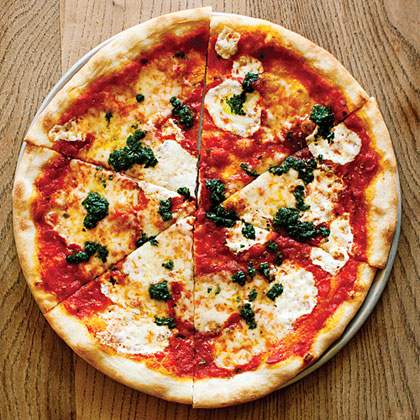

PIZZA

CLASSIC MARGHERITA
Forget takeaways - you can't beat a homemade Margherita pizza topped with fresh
tomato sauce and melted cheese. Here's how to master this everyday classic...
Ingredients
FOR THE DOUGH
- 500g '00' or strong white flour, plus extra for dusting
- 1 sachet (7g) fast-action dried yeast
FOR THE SAUCE
- 400g can plum tomatoes (San Marzano are the best)
- 1 tbsp extra virgin olive oil, plus extra to serve
- 1/2 tsp dried oregano
- Small bunch basil, leaves picked, stalks reserved
FOR THE TOPPINGS
- 50g parmesan (or vegetarian alternative), freshly grated
- 200g mozzarella from a block, cut into chunks
Steps
- First, make the dough. Tip the flour into a bowl and add 300ml
tepid water. Mix together and set aside at room temperature for 1 hr.
Dissolve the yeast in 2 tbsp water and mix this and 15g of salt through
the dough. Cover with cling film and leave somewhere warm to double
in size for a few hours. For a sourer flavour, leave in the fridge for
at least 8 hrs and up to 24 hrs - the longer you leave it the sourer it will be.
- When the dough is ready, tip it onto a lightly floured surface and divide into four.
Roll into balls and leave to rest, covered with a tea towel or cling film for another hour.
- Now make the tomato sauce. Drain some of the juice from the can and tip the rest
into a bowl with the olive oil, oregano and a generous pinch of salt, then either
scrunch everything together with your fingers for a chunky sauce or blitz with a
stick blender if you want it smooth. Tie the basil stalks together, bruise with
the back of a knife and place in the sauce. Leave the sauce at room temperature
until needed.
- To make the pizza, heat a grill to its highest setting and get a heavy frying pan.
On a floured surface push and stretch one of the balls of dough out into a circle
roughly the same size as the frying pan. Slip the round onto a floured baking sheet
and top with a quarter of the sauce, a scattering of cheese, a few basil leaves and
a quarter of the mozzarella.
- Get the pan very hot and carefully slide the pizza onto it. Cook for 2 mins, then put
the pan under the grill for another 2 mins until the sides are puffed up and the
cheese has melted. Lift onto a board, drizzle with a little olive oil if you like,
then cut into wedges and serve while you make the next one.